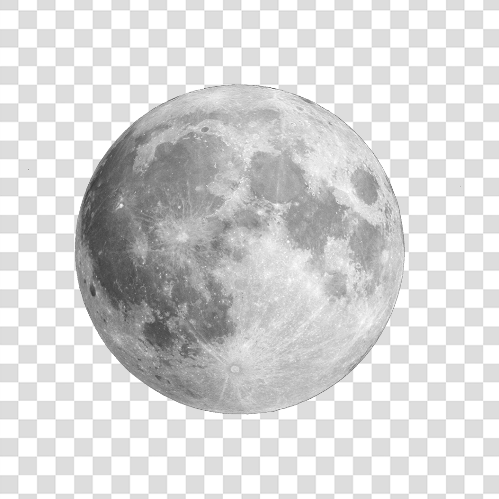

Apresentação de uma imagem

Esta página tem a figura de um tigre
Este é um tigre alegre encontrado nos arredores do World Wide Web.
Imagem formato .png
Esta imagem se trata de uma imagem PNG

Imagem formato .gif
Esta imagem se trata de uma imagem GIF

Imagem formato .svg
Esta imagem se trata de uma imagem SVG